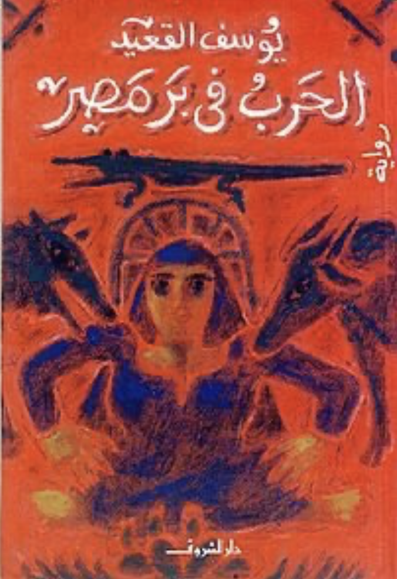

The book cover of the 2008 al-Shorouk edition of 'al-Harb fi bar Misr' (War in the Land of Egypt)
This is part of the #100ArabNovels project, where I try to revisit the Arab Writers'Association's list of 100 most significant novels, as part of trying to understand the Arab imaginary post-2011
Published in 1978, in throes of the Camp David Peace Accords, the novel or rather novella (its only 159 pages), is a stab at Sadat and his times and the way he decided to manage the war with Israel (implicitly al-Qa'id (b. 1944) condemns Egypt issuing a ceasefire and agreeing to sit and negotiate), mirroring a corrupt and self-enriching elite that uses the sacred duty of going to war for defending one's own homeland to find further ways to spare itself the threat of such duty.
The novel told through six chapters, narrated by six characters, cover the span of the story of the unusual protagonist, the one that remains voiceless, Masry (aptly called 'Egyptian'), the son of the night's watchman, who is sent to serve in the army in place of the son of the mayor of the village he lives in. And through this act of substitution, a whole thicket of relationships is revealed between the mayor, the watchman, the broker (the man who cooks up the official documents to replace one person with the other), with the other three characters (the friend, the officer and the investigator) who to reveal Masry's real truth. The latter three are almost indistinguishable from each other.
What makes al-Qa'id's novella an interesting story, and a very relevant one, is that it takes an impossible premise (an extreme degree of forgery and bureaucratic incompetence) and sets it against centuries long hostility between the Egypt's peasantry (the majority throughout Egypt's history), the landed gentry, and the state. al-Qa'id picks up on the long, complicated relationship the Egyptian peasantry has with universal conscription (enforced with varying degrees of success and contestation since 1820s under Muhammad Ali, after realizing that purchasing slaves to fight his endless wars is too expensive). The peasantry were now locked in a 'power triangle', on one hand there are the landed gentry, who Nasser allegedly tried, through his agrarian reform, to curb and undermine, without much success and on the other hand, an expanding and much more forceful state was reorganizing the peasantry and reinforcing the so-called, blood-tax (military service, was so called, as people serving in the army faced the risk of death). Its in between the two power players that the story of Masry unfolds.
The story of a man, told by other men, has seemingly no women in it. Women are ghostly presences that don't animate the story, but rather, as usual, function as instruments to buttress the story of the men. Something that filmmaker Salah Abo Seif tried to avoid in his 1991 adaptation of the story (al-Mawtin al-Masri or the Egyptian Citizen), where he made the women at the forefront of driving the narrative. In stark contrast to the historical truth, that it is the women who bore the brunt of universal conscription, since the early days when Muhammad Ali imposed conscription on the peasants, it was the women who objected, travelled across the country, camped outside draft camps and sites and demanded wages in exchange for the lost labour of the men (sending their men to fight while no one back home tills and harvests). And it was because of the these women and their insistence not to be divided from their men that the laws and procedures guiding conscription changed.
But the flat, myopic composition excluding women is not the only problem. al-Qa'id's characters tend to read as if they are situation-bound. Outside of this disclosure, their recounting the story of Masry, they don't have much depth. Concentrating all the narrative energy, into one single issue, rendering them a bit cartoonish. al-Qa'id's voice at some points, echoes his contemporary, Gamal al-Ghitany's. Pages and pages could have been taken from Waqāʾiʿ ḥārat al-Zaʿfarānī (1976; Incidents in Zafrani Alley, 1986), published two years earlier. Both writing in the shadow of Mahfouz, with al-Qa'id writing with a more keen sense of realism and less complex composition. Throughout the novel, there is olfactory presence of earth, sweat, leaves, fabric, al-Qa'id might not have a sense of narrative complexity or character depth, but he creates immediate settings, that spring to life from the page. Again serving that distilled, zoom-in quality on specific scenes that should reference a more broad layered story.
al-Qa'id's clarity comes from his clear politics. He does not hide his disdain for Sadat. From the very first page we see how he details the ways in which Sadat tried to reverse what Nasser did by giving back the lands that were nationalised under the Free Officers Movement, breaking the hopes of the small peasant proprietors of ever owning their own land. And on the other hand, exacerbating the situation by showing how the landed gentry still maintained total and complete control of the administrative, juridical and law enforcement apparatuses of the state and hence are able to avoid something as universally acknowledged as military service.
The hypocrisy of the landed gentry, the way the Egyptian bureaucracy is designed to torture and humiliate, rather than serve and rationalize power, and the way that citizen-state relation is only seen through the prism of war, with the latter being an enduring feature, might explain the persistent relevance of the story. al-Qa'id does not shy away from glorifying war, and the sacred duty of service. A war that seems to be fought with and on the bodies of thousands of peasants. But al-Qa'id, while not questioning the logic of war as a premise to citizen-state relationship, question the fairness of being governed by such a corrupt state as Sadat's. One step too short in condemning war in itself as a foundation for our relationship with the state. A premise that perpetuates the notion that the state, specifically as controlled by the army, as an insatiable, belligerent god, that is never content but with thousands of bodies and lives thrown at its feet.
al-Qa'id does not shy away from affirming this idea, as recently as 2017 he affirmed that the military control of the state is necessary to preserve its civilian nature (in reference to the so-called secular/religious divide and in harking back to Nasser's dismissal and crushing of the Muslim Brotherhood as political opposition and Sadat's reversal of that). No surprise, since al-Qa'id was appointed by the current president as a member of parliament. And even with his constant critical attacks on the way arts and culture are treated in Egypt, al-Qa'id remains a staunch supporter of the control of the military, refusing to see how conservative and morally bankrupt the military is as a holder of absolute power.
War in the Land of Egypt, could have made a brilliant short story, but in trying his hand at a more 'looser' structure (read: postmodern) and broader narratives, al-Qa'id revealed many of his weakness. What redeems the story is its deep felt sympathy for the Egyptian peasants, a feat rarely done since Abdel Rahaman al-Sharqawy wrote al-Ard or The Land (1954). As he explored and examined the way in which the modern state developed in Egypt, by a militaristic and feudal elite, at the expense of its peasant majority, al-Qa'id extended the metaphor of sacrifice to its terrifying and tragic conclusion. The depersonalization of the citizens into one body, the body of the state, means suspending any possibility for recognizing who these citizens are and how and why they chose to commit such sacrifice to begin with. The meaning, logic and significance of homeland, honour and justice remain the monopoly of the privileged few, the others remain abstracted figures, Egyptians in service of a vague, inconsistent entity called Egypt. An entity they have no power to define, relate to or influence. And through this, this play with the limits of metaphor and meaning and their bearing on reality does al-Qa'id does something radical. And its still radical forty years on, as that logic still holds on.
*The novel was translated to English by Oliver and Lorne Kenny and Christopher Tingley, published by Interlink World Fiction in the Emerging Voices series (1997).